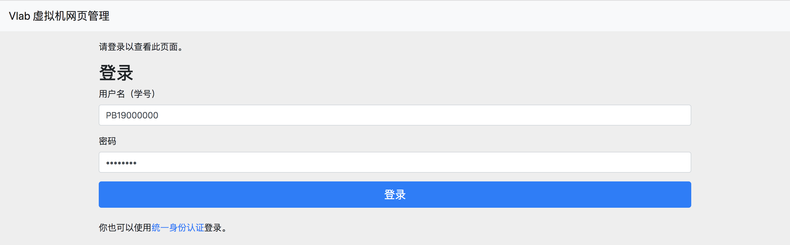
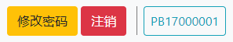
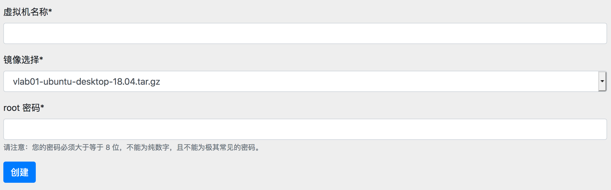
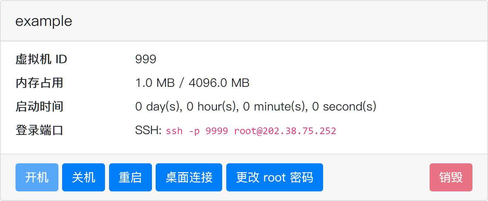
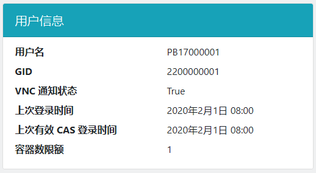

虚拟机管理控制台¶
虚拟机管理控制台是你管理虚拟机的地方。在这里你可以创建虚拟机、开关机和重启，以及查看远程连接信息。
登录¶
在登录界面，可以使用你的学号登录，或者通过统一身份认证使用学号登录。

界面¶
登录后，你可以查看你账号下拥有的虚拟机。默认每个用户允许创建 1 个虚拟机。
设置登录密码¶
虚拟机管理页面的右上角提供设置密码、退出登录与查看用户信息的功能，如图：

通过此处设置的密码既用于登录平台管理页面（不使用统一身份认证的时候），也用于通过 VNC 和 SSH 方式登录虚拟机。
创建虚拟机¶
点击「新虚拟机」按钮，可以创建虚拟机。在创建页面中，需要输入虚拟机名称并选择镜像。

其中：
- 虚拟机名称只能由英文字母、数字、短线 (
-) 和点 (.) 构成 -
镜像选择中，只有含
desktop的镜像包含桌面环境；不含desktop的镜像只能使用命令行登录，建议有 Linux 经验的同学选用root 密码是什么？
在 Linux 系统中，root 是“超级用户”，拥有系统中的所有权限。root 密码即可理解为“超级管理员密码”。
该密码仅在虚拟机中有效，适用于虚拟机内的
su命令。SSH 和 VNC 登录使用平台的登录密码，SSH 也可以使用公钥登录。
点击「创建」创建虚拟机，稍等片刻即可。
管理虚拟机¶

下方的功能按钮分别为：
- 开机：启动虚拟机（如果虚拟机处于关闭状态）
- 关机：停止虚拟机运行
- 重启：重启虚拟机（请注意在停止/重启前保存你的状态）
- 桌面连接：跳转至浏览器 VNC 登录页面，见浏览器登录页面。
- 更改 root 密码：如其所述
- 销毁：删除这个虚拟机。注意这是不可逆的，所有数据都会被删除。
提示
「桌面连接」和「更改 root 密码」这两个按钮只在虚拟机开机时才会出现。
查看用户信息¶
点击虚拟机管理页面右上角的用户名（学工号），可以查看当前登录用户的信息。

其中“有效 CAS 登录时间”是我们判断用户在校状态的重要依据。CAS 即科大统一身份认证服务。
有效 CAS 登录
当你从登录界面通过统一身份认证登录时，我们会从统一身份认证平台获取你的在校状态信息。如果你的在校状态为“在校”，那么此次登录会被记录为“有效的 CAS 登录”。
使用 SSH/VNC 登录虚拟机¶
使用统一身份认证登录的用户，初始密码为空，因此无法使用 VNC 登录，需要设置平台登录密码后方可使用 VNC 登录虚拟机。
VNC 登录方式的具体操作请在左侧目录查阅各个操作系统的配置说明。